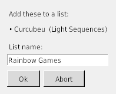
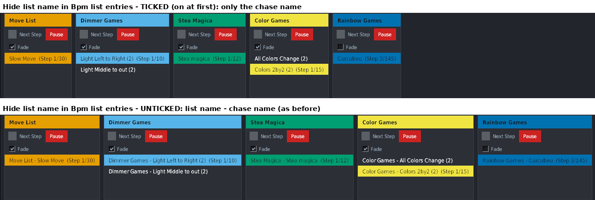
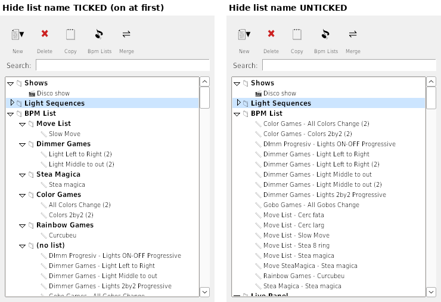
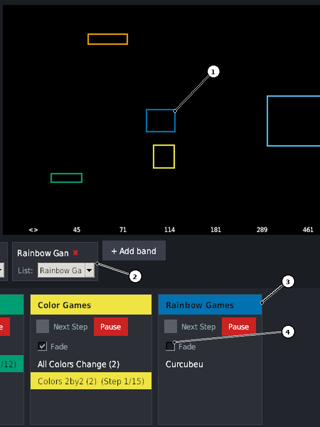

BPM lists
For: FullPlayer
A BPM list is a row of chases that the music steps through: a touch of its square = one step. When the chase that plays has reached its last step, the next touch starts the next chase of the list; after the last chase, the first one again.
Making a list
- Open the Library and find the chases (light sequences or Live-Panel chases). Several at once: Ctrl + click.
- Right-click them. The menu has Add to Bpm list... for a new list (or to type the name of one) and four quick lines, Add to Bpm - Move List, - Dimmer Games, - Color Games, - Gobo Games, that add them to these lists at once. For any other list, use Add to Bpm list... and write its name: an existing list gets the chases added.
- With Add to Bpm list...: write the name of the list and press Ok.

The right-click menu of a chase in the Library.

A new list, "Rainbow Games", with the chase Curcubeu.
The program makes copies of the chases for the list (named list - chase, kept in the Library's BPM List folder, see Bpm Lists in the Library): your own chases and buttons are never changed. A new list also gets its own square on the graph, already linked to it, and its own colour.
You can also drag chases from the Library onto the lists row at the bottom of the Sound2Light tab.
With Hide list name in Bpm list entries ticked (Setup & Patch, the Option tab; on at first) the copies are shown without the list's name in front: Slow Move under Move List, not Move List - Slow Move. The columns are only as wide as their longest line.

The same lists: at the top with Hide list name in Bpm list entries ticked, at the bottom unticked.
In the Library, ticked: the BPM List folder has a folder for every list, with the short names, and (no list) for the copies that are in no list now; unticked: one long list of "list - chase", as before.

The Library's BPM List folder: ticked on the left, unticked on the right.
When the bands or the lists do not fit on the screen, a bar shows under the lists: it moves the bands row and the lists row sideways together.
The column of a list

"Rainbow Games" just made: its square, its band and its column.
| 1 | The new square on the graph, in the colour of the list. |
| 2 | Its band, linked to the list (List: Rainbow Games). |
| 3 | The column of the list, with its name in its colour. |
| 4 | Fade - see below. A new list starts without Fade. |
- Next Step - lights up yellow while a square of the list is touched.
- Pause - the list does not step while it is paused, whatever the music does; press again to go on. While paused, the button blinks red / yellow - all the paused lists blink together, at the same moment.
- Fade - not ticked: every step jumps at once, and when the bar leaves the square the channels of the chase go dark. Ticked: every step fades with the chase's own fade time, and when the bar leaves the square the light stays as it is (the chase pauses).
- The chases of the list, in their order. The one playing now is lit, with its step: Rainbow Games - Curcubeu (Step 3/145).
To delete a whole list, right-click its name at the top of its column > Delete list ... (it cannot be undone).
Move List is the one list that can go backwards: when Step Direction goes back (the bar of the main window, the remote, or the Dir. Trigger square), the list named exactly Move List steps backwards; the others always step forward.